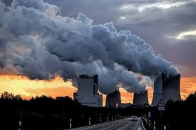

What is Global Warming?
Global warming is the long-term rise in the average temperature of the Earth's climate system.
It is a major aspect of climate change, and has been demonstrated by direct temperature measurements and by measurements of various effects of the warming.
The terms global warming and climate change are often used interchangeably.
However, speaking more accurately, global warming denotes the mainly human-caused increase in global surface temperatures and its
projected continuation, but climate change includes both global warming and its effects, such as changes in precipitation.
While there have been prehistoric periods of global warming,many observed changes since the mid-20th century have been unprecedented over decades to millennia.

Causes of Global Warming
Global warming occurs when carbon dioxide (CO2) and other air pollutants and greenhouse gases collect in the atmosphere and absorb sunlight and solar radiation that have bounced off the earth’s surface.
Normally, this radiation would escape into space—but these pollutants, which can last for years to centuries in the atmosphere, trap the heat and cause the planet to get hotter. That's what's known as the greenhouse effect.

Smoggy Dawn
At
Rajpath,New Delhi
{kind=link}
Powerplants
Are Cause of
Air Pollution

Melting IceCaps
are a constant issue
Polar Bears
In the United States, the burning of fossil fuels to make electricity is the largest source of heat-trapping pollution, producing about two billion tons of CO2 every year.Coal-burning power plants are by far the biggest polluters. The country’s second-largest source of carbon pollution is the transportation sector, which generates about 1.7 billion tons of CO2 emissions a year.
Effects Of Global warming
Predicting the consequences of global warming is one of the most difficult tasks faced by the climate researchers. This is due to the fact that natural processes that cause rain, snowfall, hailstorms, rise in sea levels is reliant on many diverse factors. Moreover, it is very hard to predict the size of emissions of greenhouse gases in the future years as this is determined majorly through technological advancements and political decisions. Global warming produces many negative effects some of which are described here. Firstly, extra water vapour which is present in the atmosphere falls again as rain which leads to floods in various regions of the world. When the weather turns warmer, evaporation process from both land and sea rises. This leads to drought in the regions where increased evaporation process is not compensated by increased precipitation. In some areas of the world, this will result in crop failure and famine particularly in areas where the temperatures are already high. The extra water vapour content in the atmosphere will fall again as extra rain hence causing flood. Towns and villages which are dependent on the melting water from snowy mountains may suffer drought and scarcity of water supply. It is because the glaciers all over the world are shrinking at a very rapid rate and melting of ice appears to be faster than previously projected.
According to Intergovernmental Panel on Climate Change (IPCC), about one-sixth of the total population of the world lives in the regions which shall be affected by a decrease in melting water. The warmer climate will likely cause more heat waves, more violent rainfall and also amplification in the severity of hailstorms and thunderstorms. Rising of sea levels is the most deadly affect of global warming, the rise in temperature is causing the ice and glaciers to melt rapidly. This will lead to rise of water levels in oceans, rivers and lakes that can pilot devastation in the form of floods. Temperature anomalies are projected to increase in coming years. Before, the 20th century, the situation was well under control but the beginning of the current century, the situation started to worsen .This was all due to increase in global warming majorly due to the fact that new industries and power houses started operation and emitted harmful gases which cause the planet to heat up. We are currently experiencing severity of extreme climate events in the form of thunderstorms, floods and earthquakes. This destruction will take a sharp hike if nothing is done to stop this menace. How will we survive on earth given the rise in temperature to prevail?

Levels of C02 emissionsby different countries
In 1895, Svante Arrhenius first calculated the impact that increasing carbon dioxide could have on Earth’s temperature. Since then, scientists have further refined their understanding of the greenhouse effect and the role our rising carbon emissions are having on it.
Tackling Global Warming
Mitigation of and adaptation to climate change are two complementary responses to global warming. Successful adaptation is easier if there are substantial emission reductions. Many of the countries that have contributed least to global greenhouse gas emissions are among the most vulnerable to climate change, which raises questions about justice and fairness with regard to mitigation and adaptation.
1.Mitigation
Climate change can be mitigated through the reduction of greenhouse gas emissions or the enhancement of the capacity of carbon sinks to absorb greenhouse gases from the atmosphere. There is a large potential for future reductions in emissions by a combination of activities, including energy conservation and increased energy efficiency; the use of low-carbon energy technologies, such as renewable energy, nuclear energy, and carbon capture and storage; decarbonizing buildings and transport; and enhancing carbon sinks through, for example, reforestation and preventing deforestation. A 2015 report by Citibank concluded that transitioning to a low-carbon economy would yield a positive return on investments.
2.Adaptation
Climate change adaptation is "the adjustment in natural or human systems in response to actual or expected climatic stimuli or their effects, which moderates harm or exploits beneficial opportunities." Examples of adaptation are improved coastline protection, better disaster management, and the development of more resistant crops. The adaptation may be planned, either in reaction to or anticipation of global warming, or spontaneous, i.e. without government intervention.
The public sector, private sector, and communities are all gaining experience with adaptation, and adaptation is becoming embedded within certain planning processes.While some adaptation responses call for trade-offs, others bring synergies and co-benefits.Environmental organizations and public figures have emphasized changes in the climate and the risks they entail, while promoting adaptation to changes in infrastructural needs and emissions reductions.
Adaptation is especially important in developing countries since they are predicted to bear the brunt of the effects of global warming.The capacity and potential for humans to adapt, called adaptive capacity, is unevenly distributed across different regions and populations, and developing countries generally have less capacity to adapt.In June 2019, U.N. special rapporteur Philip Alston warned of a "climate apartheid" situation developing, where global warming "could push more than 120 million more people into poverty by 2030 and will have the most severe impact in poor countries, regions, and the places poor people live and work"
3.Climate engineering
Climate engineering (sometimes called geoengineering or climate intervention) is the deliberate modification of the climate. It has been investigated as a possible response to global warming by groups including NASA and the Royal Society.Techniques studied fall generally into the categories of solar radiation management and carbon dioxide removal, although various other schemes have been suggested. A study from 2014 investigated the most common climate engineering methods and concluded that they are either ineffective or have potentially severe side effects and cannot be stopped without causing rapid climate change.